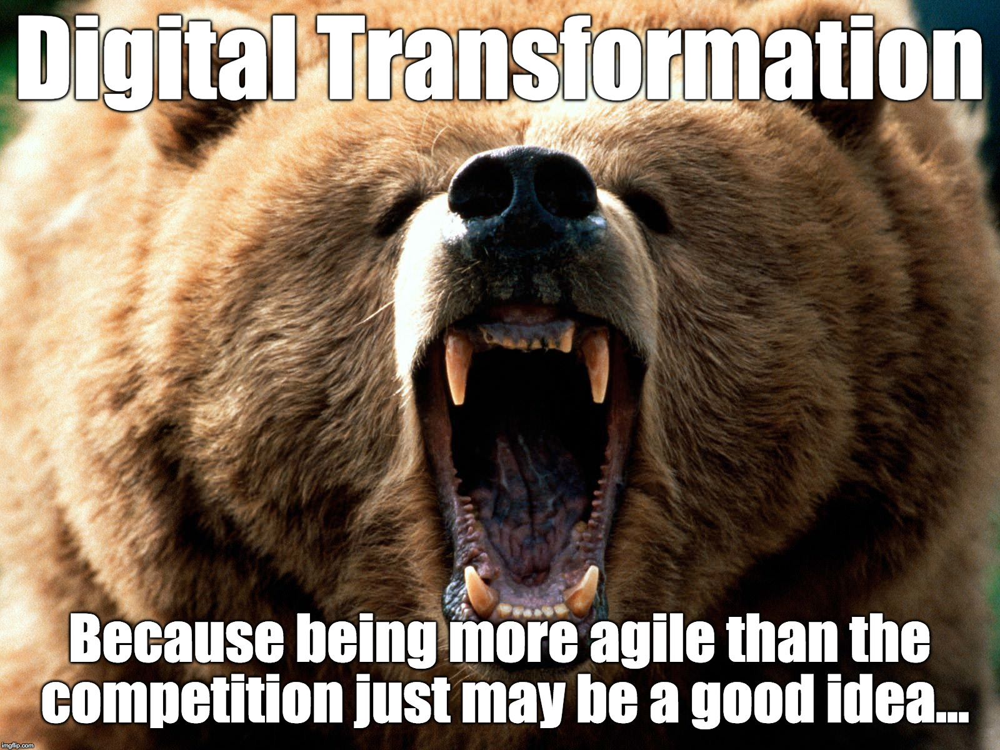
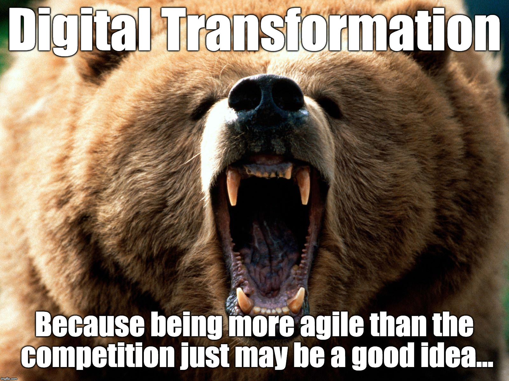

The Network Effect as Strategy:
Product Management for Digitalization
Digitale Transformation 2021 [https://www.worldclassbusinessleaders.com/events/dt21/]
Erik Wilde (@dret)
Axway Catalyst
July 14, 2021
 [https://creativecommons.org/licenses/by/4.0/]
[https://creativecommons.org/licenses/by/4.0/]
This work is licensed under a CC
Attribution 4.0 International License [https://creativecommons.org/licenses/by/4.0/]

 
